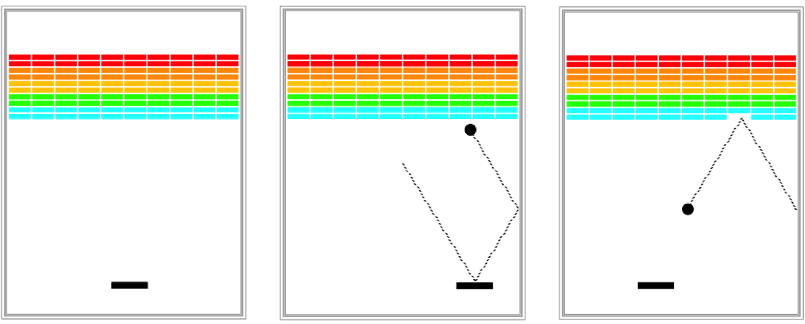

Due: Monday, July 31st, 11AM PST
May be done in pairs

Your fourth assignment is the classic arcade game Breakout that will give you practice with graphics, events, animation and instance variables.
There is a starter project including all of these problems that you can access using the link below. Once you have the starter code set up, edit the program files so that the assignment actually does what it’s supposed to do (see the assignment handout), which will involve a cycle of coding, testing, and debugging until everything works. The final step is to submit your assignment.
This assignment may (optionally) be done in pairs. As a reminder, you may only pair up with others with the same section time and location.
Note: In general, limit yourself to using Java syntax taught in lecture, and the parts of the textbook we have read, up through the release of this assignment (July 20). You may, however, use material covered in class past this date for any optional extensions. If you would like to implement any extensions, please implement them in a separate file, such as BreakoutExtra.java. Clearly comment at the top of this file what extensions you have implemented. Instructions on how to add files to the starter project are listed in the Eclipse page FAQ.
To run the demo, download the JAR file below and double-click it to run. If you are unable to run it by double-clicking (e.g. due to an error message on Macs), instead right-click on the demo JAR file and click "Open".
Note: the "Debugging with Karel" handout still provides valuable debugging tips for Java programs! In particular, the debugger functions identically for Karel and Java programs.
Hangman, so I renamed it to my own name such as DaveIsGreat.
That is okay, right?